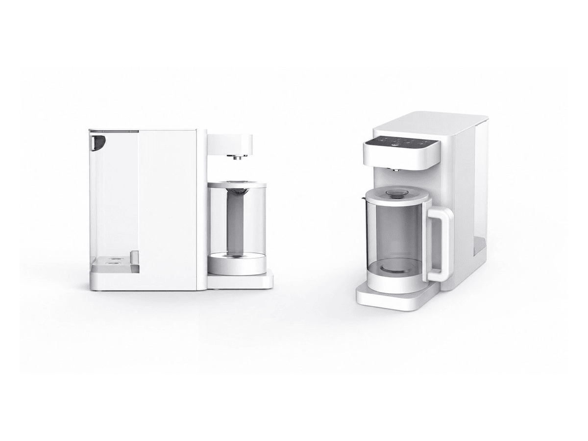
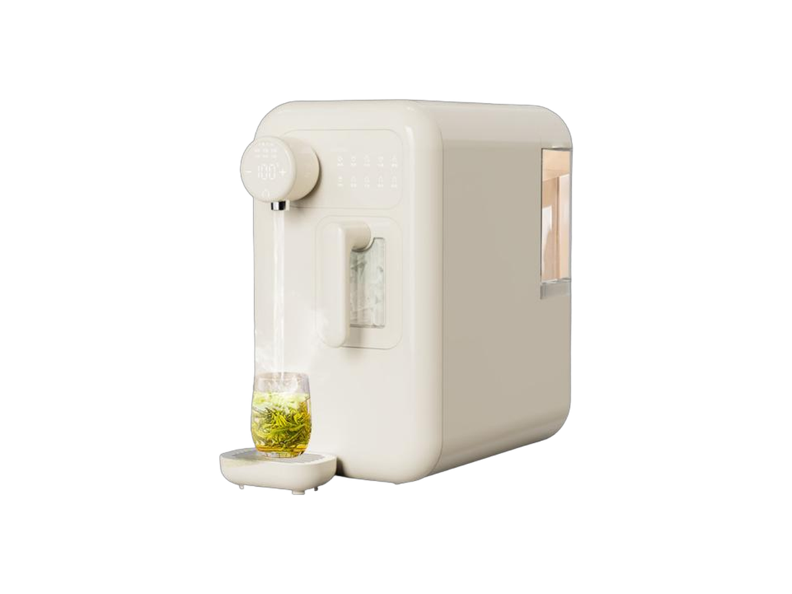
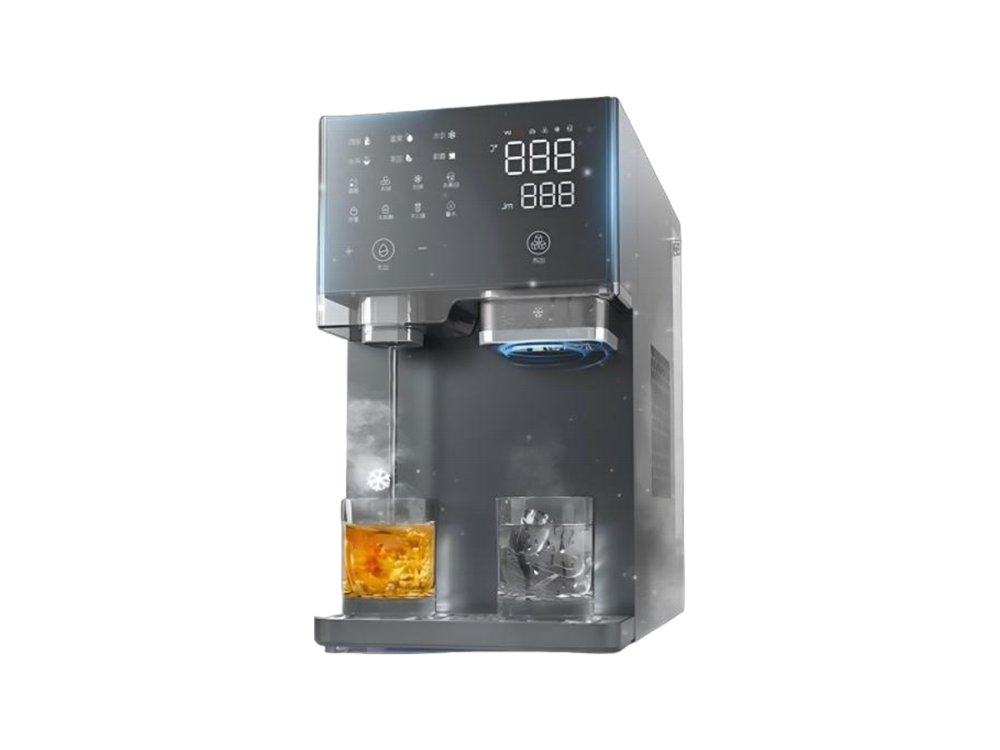
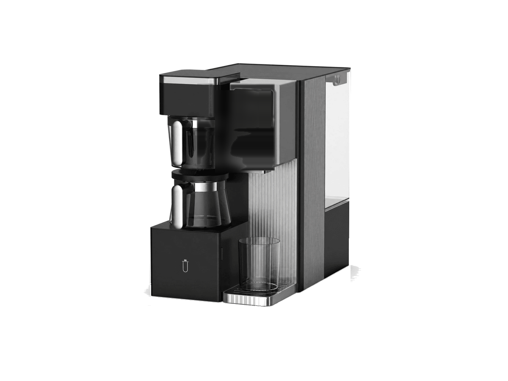

Da bancoRP-C07
Purificatore RO con caraffa riscaldante
SKU: RP-C07
MOQ: da confermare su richiesta
Home/Prodotti/Sistemi da banco/ RP-C09

Sistemi da banco
Purificatore RO con ghiaccio, acqua calda e acqua fredda (M2401RNI)
RP-C09 — Purificatore RO con ghiaccio, acqua calda e acqua fredda. Specifica chiave: Capacità RO 50 / 75 / 100 GPD. Le specifiche sono confermate per modello e ordine. Cinque ulteriori varianti di questa famiglia per fare ghiaccio sono elencate qui sotto.
Richiedi un preventivo per RP-C09
Tensione / frequenza configurabili per il paese di destinazione. Altre configurazioni sono confermate per ordine.
RP-C09 è un purificatore RO da banco che produce ghiaccio e serve acqua calda e fredda, quindi una sola macchina copre ghiaccio, acqua calda e acqua fredda purificate. Il modello principale produce ≥6 kg di ghiaccio per 24 ore, e la famiglia comprende altre cinque varianti per fare ghiaccio con diversi tempi di ciclo e colori. Il modello principale funziona a 50 / 75 / 100 GPD con filtrazione PP + CTO + PP + RO + C. È pensato per proprietari di marca che vogliono un modello da banco che faccia più di un purificatore standard.
Qual è la quantità minima d'ordine?
Il primo ordine è di 200 unità per modello, e i riordini sono di 500 unità.
Posso ordinare un campione prima di un ordine in volume?
Sì. I campioni sono pronti in 15 giorni e il costo del campione viene rimborsato con il primo ordine in volume. Gli ordini in volume richiedono 40 giorni dopo l'approvazione del campione e vengono spediti FOB Shenzhen.
Quanto ghiaccio produce?
Il modello principale produce ≥6 kg per 24 ore (8 kg a 220 V). Le varianti sono quotate per ciclo — ad esempio 49 pezzi per ciclo in circa 8 minuti sulla variante A — e le due misure non possono essere confrontate direttamente.
Passi il cursore sull'immagine di una variante per vederne le specifiche. Sui touchscreen, tocchi un'immagine.



Specifiche complete di ciascuna variante, fianco a fianco. La tabella delle specifiche più avanti mostra i valori di RP-C09.
| Specifica | RP-C09-1 — ghiaccio, acqua calda e acqua fredda (M2401RNI) | RP-C09-2 — variante A per fare ghiaccio, beige (AM2512HI) | RP-C09-3 — variante B per fare ghiaccio, grigia con doppia uscita (AM2513HI) | RP-C09-4 — variante C per fare ghiaccio, display frontale (W90) | RP-C09-5 — variante D per fare ghiaccio (W91) | RP-C09-6 — variante E per fare ghiaccio (W100) |
|---|---|---|---|---|---|---|
| Capacità RO | 50 / 75 / 100 GPD | Confermato per ordine | Confermato per ordine | 100 GPD | Confermato per ordine | Confermato per ordine |
| Produzione RO | ≥0.13 / ≥0.19 / ≥0.26 L/min | Confermato per ordine | Confermato per ordine | 0.26 L/min | Confermato per ordine | Confermato per ordine |
| Capacità ghiaccio | ≥6 kg / 24 h (8 kg a 220 V; >6 kg a 110 V) | 8 min / 49 pezzi per ciclo | 6 min per ciclo | Circa 8–10 min/ciclo; 9 pezzi per ciclo | Confermato per ordine | Confermato per ordine |
| Conservazione ghiaccio | Confermato per ordine | 49 pezzi | Confermato per ordine | 500 g | Confermato per ordine | Confermato per ordine |
| Potenza nominale | 2180 W | 2150 W | 2200 W | 2200 W (riscaldamento 2000 W) | Confermato per ordine | Confermato per ordine |
| Capacità acqua fredda | Confermato per ordine | Acqua fredda >6°C / 1.2 L/h | Acqua fredda >6°C / 1.2 L/h | 2.5 L/h a ≤10 °C | Confermato per ordine | Confermato per ordine |
| Capacità acqua calda | Confermato per ordine | Acqua calda >90°C / 24 L/h | Acqua calda >90°C / 24 L/h | Confermato per ordine | Confermato per ordine | Confermato per ordine |
| Serbatoio acqua grezza | Confermato per ordine | 2.6 L | 4 L | Confermato per ordine | Confermato per ordine | Confermato per ordine |
| Dimensioni (L×P×A) | 235 × 457 × 455 mm | 228 × 448 × 402 mm | 228 × 435 × 399 mm | 415 × 305 × 455 mm | Confermato per ordine | Confermato per ordine |
| Volume nominale di acqua purificata | 2000 L | Confermato per ordine | Confermato per ordine | 4000 L | Confermato per ordine | Confermato per ordine |
| Filtrazione | PP + CTO + PP + RO + C | Confermato per ordine | Confermato per ordine | PCC + RO | Confermato per ordine | Confermato per ordine |
| Colore | Confermato per ordine | Beige retrò | Grigio satinato | Grigio | Confermato per ordine | Confermato per ordine |
| Tensione / frequenza | Configurabile per il paese di destinazione | 220 V / 50 Hz | 220 V / 50 Hz | 220–240 V, 50–60 Hz | Confermato per ordine | Confermato per ordine |
La capacità di ghiaccio è indicata come pubblicata: RP-C09 in kg per 24 h, le varianti in minuti / pezzi per ciclo — le due misure non sono direttamente comparabili. Le varianti A e B non indicano capacità RO, filtrazione né volume nominale di acqua purificata nelle tabelle dei parametri del catalogo; tali valori sono confermati per ordine. Le varianti D ed E appartengono alla serie da banco di cubetti di ghiaccio con compressore citata nel catalogo, ma il catalogo non fornisce fotografia né specifica individuale per nessuna delle due, quindi entrambe sono indicate come confermate per ordine finché la fabbrica non le confermi.
Video del prodotto con produzione di ghiaccio.
9 righe di specifiche dal catalogo ROPureOEM.
| Capacità RO | 50 / 75 / 100 GPD |
|---|---|
| Produzione RO | ≥0.13 / ≥0.19 / ≥0.26 L/min |
| Capacità ghiaccio | ≥6 kg / 24 h (8 kg a 220 V; >6 kg a 110 V) |
| Potenza nominale | 2180 W |
| Dimensioni | 235 × 457 × 455 mm |
| Volume nominale di acqua purificata | 2000 L |
| Filtrazione | PP + CTO + PP + RO + C |
| Tensione / frequenza | Configurabile per il paese di destinazione |
| Altre configurazioni | Confermato per ordine |
Le specifiche sono tratte dal catalogo ROPureOEM. Se un valore non è ancora confermato, è indicato come “Confermato per ordine” — non pubblichiamo valori non confermati.

Da bancoPurificatore RO con caraffa riscaldante
SKU: RP-C07
MOQ: da confermare su richiesta
 Da banco
Da bancoPurificatore da banco a cartuccia tutto in uno
SKU: RP-C08
MOQ: da confermare su richiesta
 Da banco
Da bancoRO da banco con raffreddamento a compressore
SKU: RP-C10
MOQ: da confermare su richiesta

Da bancoPurificatore RO con caffè macinato fresco
SKU: RP-C11
MOQ: da confermare su richiesta